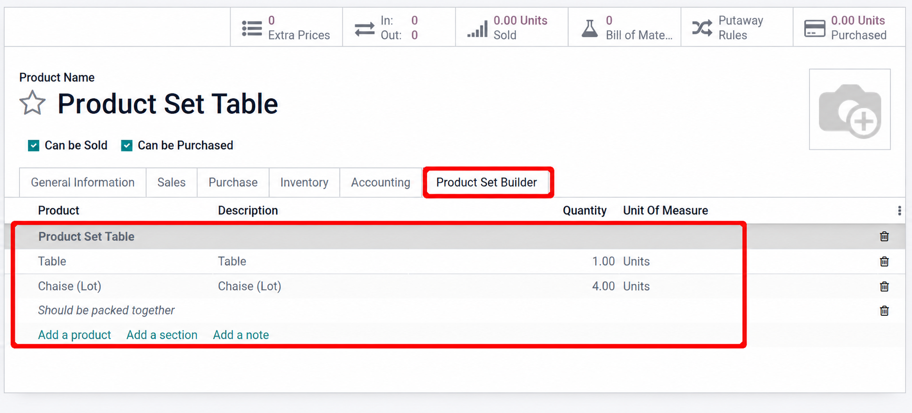

<section class="oe_container">
  <div class="oe_row oe_spaced">
    <h2 class="oe_slogan">Product Set Builder - Inventory</h2>
    <p>Add product set components as stock moves on draft inventory transfers.
       Requires Product Set Builder and Inventory.</p>
    <h3>Configure a product set</h3>
    <p>Enable Is a Product Set and define the component products and quantities.</p>
    
    <h3>Organize components</h3>
    
    <h3>Add components to a draft transfer</h3>
    <p>Open a draft transfer, click Add Product Set in Operations,
       choose a product set and quantity, then apply.</p>
    
    <p>Images are edited illustrations of product configuration and the shared
       selection wizard, not live Odoo 18 inventory screenshots.</p>
  </div>
</section>
